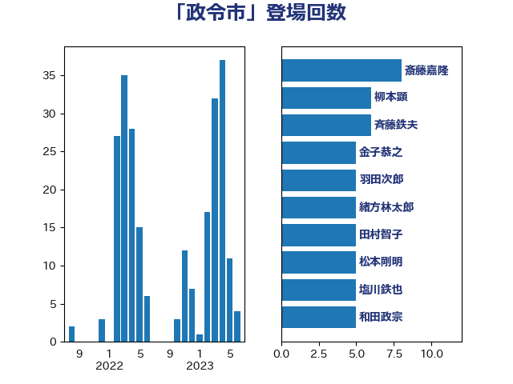

単語「政令市」

| 斎藤嘉隆 | 立憲民主党 | 8 回 |
| 柳本顕 | 自由民主党 | 6 回 |
| 斉藤鉄夫 | 公明党 | 6 回 |
| 金子恭之 | 自由民主党 | 5 回 |
| 羽田次郎 | 立憲民主党 | 5 回 |
| 緒方林太郎 | 無所属 | 5 回 |
| 田村智子 | 日本共産党 | 5 回 |
| 松本剛明 | 自由民主党 | 5 回 |
| 塩川鉄也 | 日本共産党 | 5 回 |
| 和田政宗 | 自由民主党 | 5 回 |
| 上田清司 | 国民民主党 | 5 回 |
| 重徳和彦 | 立憲民主党 | 4 回 |
| 池下卓 | 日本維新の会 | 4 回 |
| 山際大志郎 | 自由民主党 | 4 回 |
| 宮本岳志 | 日本共産党 | 4 回 |
| 守島正 | 日本維新の会 | 4 回 |
| 西田実仁 | 公明党 | 3 回 |
| 笠浩史 | 無所属 | 3 回 |
| 田村貴昭 | 日本共産党 | 3 回 |
| 杉本和巳 | 日本維新の会 | 3 回 |
| 後藤祐一 | 立憲民主党 | 3 回 |
| 山本剛正 | 日本維新の会 | 3 回 |
| 吉川元 | 立憲民主党 | 3 回 |
| 鳩山二郎 | 自由民主党 | 2 回 |
| 野田国義 | 立憲民主党 | 2 回 |
| 菅家一郎 | 自由民主党 | 2 回 |
| 福田昭夫 | 立憲民主党 | 2 回 |
| 田村まみ | 国民民主党 | 2 回 |
| 岡田直樹 | 自由民主党 | 2 回 |
| 岡本あき子 | 立憲民主党 | 2 回 |
| 寺田稔 | 自由民主党 | 2 回 |
| 城井崇 | 立憲民主党 | 2 回 |
| 吉良よし子 | 日本共産党 | 2 回 |
| 倉林明子 | 日本共産党 | 2 回 |
| 住吉寛紀 | 日本維新の会 | 2 回 |
| 下野六太 | 公明党 | 2 回 |
| 鰐淵洋子 | 公明党 | 1 回 |
| 鬼木誠 | 立憲民主党 | 1 回 |
| 高橋千鶴子 | 日本共産党 | 1 回 |
| 高木かおり | 日本維新の会 | 1 回 |
| 阿部司 | 日本維新の会 | 1 回 |
| 長峯誠 | 自由民主党 | 1 回 |
| 野田聖子 | 自由民主党 | 1 回 |
| 野田佳彦 | 立憲民主党 | 1 回 |
| 遠藤良太 | 日本維新の会 | 1 回 |
| 足立康史 | 日本維新の会 | 1 回 |
| 西野太亮 | 自由民主党 | 1 回 |
| 西村明宏 | 自由民主党 | 1 回 |
| 舞立昇治 | 自由民主党 | 1 回 |
| 篠原豪 | 立憲民主党 | 1 回 |
| 竹内真二 | 公明党 | 1 回 |
| 田村憲久 | 自由民主党 | 1 回 |
| 田嶋要 | 立憲民主党 | 1 回 |
| 片山大介 | 日本維新の会 | 1 回 |
| 浅川義治 | 日本維新の会 | 1 回 |
| 池田佳隆 | 自由民主党 | 1 回 |
| 永岡桂子 | 自由民主党 | 1 回 |
| 梅村みずほ | 日本維新の会 | 1 回 |
| 柚木道義 | 立憲民主党 | 1 回 |
| 本村伸子 | 日本共産党 | 1 回 |
| 早坂敦 | 日本維新の会 | 1 回 |
| 斎藤アレックス | 国民民主党 | 1 回 |
| 打越さく良 | 立憲民主党 | 1 回 |
| 後藤茂之 | 自由民主党 | 1 回 |
| 山口那津男 | 公明党 | 1 回 |
| 尾身朝子 | 自由民主党 | 1 回 |
| 小寺裕雄 | 自由民主党 | 1 回 |
| 宮崎勝 | 公明党 | 1 回 |
| 奥野総一郎 | 立憲民主党 | 1 回 |
| 奥下剛光 | 日本維新の会 | 1 回 |
| 嘉田由紀子 | 無所属 | 1 回 |
| 吉田とも代 | 日本維新の会 | 1 回 |
| 古賀友一郎 | 自由民主党 | 1 回 |
| 古賀之士 | 立憲民主党 | 1 回 |
| 勝目康 | 自由民主党 | 1 回 |
| 務台俊介 | 自由民主党 | 1 回 |
| 前川清成 | 日本維新の会 | 1 回 |
| 伊藤岳 | 日本共産党 | 1 回 |
| 伊波洋一 | 無所属 | 1 回 |
| 井上貴博 | 自由民主党 | 1 回 |
| 井上哲士 | 日本共産党 | 1 回 |
| 中司宏 | 日本維新の会 | 1 回 |
| 上月良祐 | 自由民主党 | 1 回 |